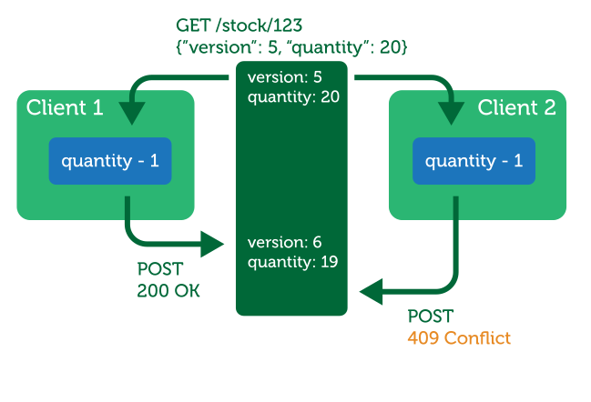

Reactive e-commerce API design
by Oleg Ilyenko / @easyangel
About me
-
8 years of software development
- 5 years working on e-commerce products
- Creator of Scaldi - Scala DI library
- Author of Hacking Scala blog
- Scala Backend Engineer at commercetools GmbH
RESTful API design
-
Resources
- Where to put the boundary?
-
Verbs
- PUT vs POST?
- Semantics of POST?
-
Transactions?
- Scalability?
Separating the Model
Single Model
Separate Read/Write Model
CQRS
Command Query Responsibility Segregation
- Multiple read models
- Precise and Flexible Write Model
POST /my-shop/orders
{
"customerId": "456",
"lineItems": [
{"productId": "PRODUCT-1", "quantity": 3},
{"productId": "PRODUCT-25", "quantity": 2}
],
...
}
POST /my-shop/carts/CART-123
{
"actions": [
{"action": "addLineItem", "productId": "PRODUCT-1", "quantity": 5},
{"action": "removeLineItem", "productId": "PRODUCT-1", "quantity": 2},
{"action": "addLineItem", "productId": "PRODUCT-25", "quantity": 2}
]
}
POST /my-shop/orders
{
"cartId": "CART-123"
}
Characteristics
- Change history
-
Much less data to transfer
- Good for mobile clients
- More control over the changes
- Not very suitable for data synchronization
Event Sourcing
Event Sourcing
-
Events represent facts from the past
- OrderCreated
- ProductNameChanged
- After event is saved, all business logic is already performed
- Most normalized form of the data
- Point-in-time restore/view
Multiple Read Models
Disadvantages of Event Sourcing
- bigger database
- backwards compatibility of events
Resource Boundaries
- Where to put the boundary?
- Should line item be part of order resource?
- Or maybe it should be a separate resource?
Transactional Boundary
- Life beyond Distributed Transactions:
- Transactional boundary - one concrete entity
Optimistic Concurrency Control
Bigger workflows
The Reactive Manifesto
http://www.reactivemanifesto.org/

Event API
GET /my-shop/events
HTTP/1.1 200 OK
Content-Type: text/event-stream
...
id: EVENT-123
data: {
"entity": "product",
"entityId": "PROD-56",
"type": "nameChanged",
"sequenceNumber": 10,
"payload": {...}
}
Implementation
-
SSE (Server-sent events)
- Last-Event-ID header
- WebSockets
- Long-polling
-
Important properties
-
Event ID
- Can be: entityId + entityVersion
- Type of entity
- ID of entity
- Sequence number within this entity
-
Event ID
Thank you!
Questions?
- http://bit.ly/reactive-ecommerce-api
- Twitter: https://twitter.com/easyangel
- CQRS: http://martinfowler.com/bliki/CQRS.html
- Event sourcing: http://martinfowler.com/eaaDev/EventSourcing.html
- Life beyond Distributed Transactions: http://bit.ly/LifeBeyondTxns
- The Reactive Manifesto: http://www.reactivemanifesto.org